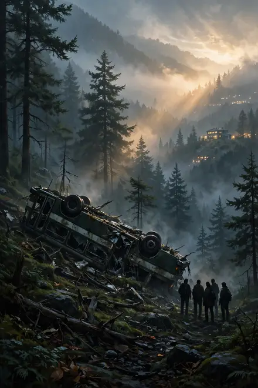

長編・全9章・完結
救助は来ない
サバイバル冒険 ・ 約11,059字
遭難した男たちのもとに、救助は来ない。生き延びるには、自分たちの力で動くしかない。極限の状況で、男たちは何を守り、何を捨てるのか。
第一章 横転
横山鉄平が、そのバスに乗ったのは偶然だった。
本当なら、前日のうちに車で山を越えているはずだった。ところが取引先の都合で打ち合わせが延び、レンタカーは返してしまった。残された手段は、一日に四本しかない路線バスだけだった。
「柚原病院前、行き」。
行き先表示に、鉄平は小さくため息をついた。柚原病院。山奥の小さな病院だが、透析部門だけは地域の中核で、鉄平の会社にとっても大事な納入先だった。今日は新しい機器の説明と、消耗品の定期納品の確認。普通なら、受付で名刺を渡し、事務長と話し、ついでに看護師長へ挨拶をして、それで終わるはずの仕事だった。
バスは思いのほか混んでいた。田舎の路線バスは空っぽだという先入観は、あっさり裏切られた。座席はほぼ埋まり、通路側にまで人が座っている。病院に向かう人間ばかりなのだ。週に二度の透析に通う老人。付き添いの女の人。大きな鞄を抱えた男。膝の上に文庫本を置いた、白いブラウスの女性。鉄平の斜め前に座ったその人の横顔を、彼は何度か盗み見た。看護師だろうか。休み明けの出勤なのかもしれない。違う、と彼は思った。あの落ち着き方は、患者ではない。
最後列の窓側には、少年が一人で座っていた。小学六年か、中学一年か。そのくらいの歳に見えた。ランドセルではなく、くたびれたリュックを膝に抱え、ずっと外を見ていた。こんな山奥行きのバスに、一人で乗る子供。鉄平は少しだけ気になったが、それ以上の詮索はしなかった。
運転手の中島が、発車前にマイクで言った。
「山は天気が変わりやすいですから、シートベルトをお願いします」
誰も、まともに聞いていなかった。
揺れは、突然ではなかった。
最初は、小さな振動だった。足の裏から伝わる、低い震え。次に、音が消えた。鳥の声も、エンジンの唸りの向こうにあったはずの風の音も、一斉にいなくなった。
そして世界が、横にずれた。
バスの車体が大きく傾ぎ、タイヤが悲鳴を上げた。山側の斜面から、乾いた音を立てて土と石が崩れ落ちてくる。運転手が何か叫んだ。ハンドルが切られる。車体が崖側へ、そして山側へと振られ、最後にゆっくりと、信じられないほどゆっくりと、横に倒れた。
金属の軋む音。ガラスの砕ける音。誰かの悲鳴。荷物の落ちる音。全部が一瞬に重なって、鉄平の意識は真っ白になった。
気づいたとき、世界は横倒しになっていた。
鉄平はシートベルトに吊られていた。右の肩に鋭い痛み。窓ガラスに頬が押しつけられ、その向こうに潰れた草と土が見えた。車内は阿鼻叫喚ではなかった。もっと静かだった。うめき声。子供の泣き声。誰かが「大丈夫か」と繰り返す声。
「動ける人は、まず自分の体の確認をしてください」
凛とした声がした。白いブラウスの女性だった。彼女はすでにベルトを外し、倒れた車体の通路――今は壁になった通路――に膝をついて、隣の老人の脈を取っていた。
「看護師です。頭を打った人は、無理に起きないで。出血してる人は、手で押さえて」
その声の落ち着きに、車内の空気がわずかに変わった。鉄平はベルトを外し、這うようにして立ち上がった。いや、立ったのではない。天井側になった壁に足をかけ、横倒しの世界で体を起こしたのだ。
「手伝います。何をすればいい」
女性は一瞬だけ鉄平を見た。
「割れた窓から出られるか、見てきてください。あと、動ける人を外へ」
鉄平はうなずいた。その瞬間、自分が今日、病院へ「営業に行くはずだった男」であることを、彼は完全に忘れていた。
外に出ると、山の空気は妙に澄んでいた。地震は終わっていた。だが、来た道の先で、山肌が大きく崩れ、道路が土砂に消えていた。戻る道は、なかった。
鉄平は携帯を取り出した。圏外。
空は青く、鳥が鳴いていた。まるで何事もなかったように。
その静けさが、鉄平には何より不気味だった。
第二章 病院
柚原病院は、事故現場から歩いて二十分の距離だった。
横転したバスから運び出された負傷者は、動ける人間が肩を貸し、戸板に乗せ、あるいは背負って、その二十分を運ばれた。病院まであと少しという場所での事故だったことが、せめてもの救いだったのかもしれない。
病院は、無事ではなかった。
建物自体は持ちこたえていた。だが停電し、非常用発電機の低い唸りがロビーの隅で続いていた。昼だというのに薄暗い廊下。割れたガラス。倒れた棚。待合の長椅子に横たわる入院患者たち。院長の岡部は六十八歳。白衣は汚れていたが、声だけは平静だった。
「よく来てくれた、高瀬」
白衣の――いや、白いブラウスの女性に、岡部が言った。彼女は高瀬さくら、三十二歳。この病院の看護師だった。出勤途中のバスで事故に遭い、そのまま誰よりも先に働き始めていた。
「看護師は、私と、夜勤明けで残ってる中村さんだけです。事務の人は一人が足を。入院患者は九人、うち三人は歩けません」
さくらは矢継ぎ早に報告し、すぐにバスの負傷者の仕分けに入った。運転手の中島は頭を打ち、意識が混濁していた。高齢の女性が腕を骨折。付き添いの男は肋骨をやっていた。少年は――少年は、無傷だった。リュックを抱え、廊下の隅で、静かに大人たちを見ていた。
鉄平は、自分でも驚くほど働いた。
医療機器の営業は、病院の中の「モノ」の配置をよく知っている。彼は院内の備品庫から点滴スタンドを運び、発電機の燃料タンクの残量を確かめ、酸素ボンベの本数を数え、事務室のホワイトボードに書き出した。
「発電機の軽油、あと丸一日分。酸素はボンベ六本。点滴の在庫は……」
「横山さん、助かります」
さくらが言った。その時初めて、彼女は鉄平の顔をまともに見た。
「私、柚原病院の高瀬です。あなたは」
「横山鉄平。医療機器の……今日、本当はこちらの病院に営業で伺うはずだったんです」
二人は一瞬、顔を見合わせた。こんな出会い方があるか。だが、笑う余裕はすぐになくなった。
その夜、全員がロビーと廊下に寝た。バスの乗客十七名。病院の患者九名。職員五名。三十一人分の毛布は、病院の備蓄で何とか足りた。食料は給食室の在庫と、売店のパンと缶詰。給食のおばちゃんが「三日分はある」と言った。裏を返せば、四日目からはなかった。
携帯電話は、誰のものも繋がらなかった。病院の固定電話は不通。テレビは映らず、ラジオだけが、ひどいノイズの中から時おり言葉の断片を拾った。
――震源は……甚大な被害が……各地域で孤立が……
それ以上のことは、分からなかった。
二日目の朝、鉄平は屋上に上がった。見渡す限り、山と、山と、山だった。集落の家々は潰れてはいなかったが、煙も、灯りもなかった。人の動く気配が、どこにもなかった。
大丈夫だ、と鉄平は自分に言い聞かせた。こんな大きな災害なら、必ず救助が来る。日本はそういう国だ。ヘリが来る。自衛隊が来る。道路が開かれる。あと二日、あと三日持ちこたえればいい。
鉄平は、その「あと少し」という言葉にしがみついた。
それが、どれほど危うい希望であるかを、まだ知らなかった。
第三章 いい知らせ
ラジオを持っていたのは、藤田源三という老人だった。
七十八歳。週に二度、バスで透析に通う常連で、事故の日も病院に向かう途中だった。発電機の燃料を惜しむため、昼間はテレビもつけられない。源さんは自分の携帯ラジオを病院の「放送局」にすることにした。毎日、決まった時間にロビーに座り、イヤホンを片耳に、聞こえたことを皆に伝えた。
三日目まで、ラジオの知らせることは断片ばかりだった。大地震があったこと。被害は広い範囲に及んでいること。各地で道路が寸断され、孤立した集落が数えきれないほどあること。
四日目の夕方、源さんはロビーで手を挙げた。いつもと様子が違った。顔色が、悪かった。
「今の放送な……大事な話や。みんな、聞いてくれ」
人々が集まった。源さんは咳払いをして、震える声で言った。
「山の方の集落への救助はな……『当分、見込めない』そうや。道が、何か所も崩れててな。大きい町の方から順にやってるらしい。うちみたいな小さい集落は……」
言葉が途切れた。
「後回し、いうことやな」
誰かが言った。ロビーの空気が、氷のように冷えた。
「当分って、何日や」 「一週間か、二週間か……」 「食料が持たんぞ」
声が重なり、ざわめきは大きくなる寸前だった。その時、鉄平が椅子に登った。
「皆さん、聞いてください」
鉄平は言った。自分でも、なぜこんなことを言い出したのか分からなかった。営業マンの直感だったのかもしれない。一番悪い報せは、一番先に、腹を括る材料として出さなければいけない。
「今の話は、いい知らせです」
一瞬、静まり返った。何人かが、こいつは何を言っているのだ、という顔をした。
「救助が明日来るかもしれない、と思うから、私たちは昨日も今日も、待ちぼうけでした。残りの食料を眺めて、不安になって、それで一日が終わる。でも、もう待たなくていいんです。救助は来ない。はっきりした」
鉄平の声は、途中から震えていた。彼の本心も、怖かったのだ。怖いからこそ、言わなければならなかった。
「待つのは終わりです。今日から私たちは、救助される側じゃなくて、生き延びる側になります。食料は計画して使う。水は汲みに行く。薪を割る。畑のある家に、分けてもらえるか頼みに行く。決めるのは、私たちです」
静寂。
最初に応えたのは、源さんだった。
「……せやな。ワシら、誰も『助けられ待ち』やない。生きる側や」
誰かが小さく笑った。笑いではなかったのかもしれない。緊張の糸が、別の形に張り替わった音だった。
その夜、ホワイトボードの隅に、鉄平は新しい文字を書いた。
「一日目」
救助を待つ数え方は、もうやめた。ここから先は、自分たちで生きた日を数える。
ロビーの隅で、少年がその文字を見ていた。リュックを抱えたまま、長いこと、じっと見ていた。
少年が口を開いたのは、その時が初めてだった。
「おじさん」
「ん？」
「あした、ぼくも水汲み、行く」
鉄平はうなずいた。その子が何者なのか、なぜ一人でバスに乗っていたのか。その答えは、まだ遠かった。
第四章 山の男
男が現れたのは、六日目の朝だった。
水汲みに出た鉄平たちが、沢のほとりでその姿を見つけた。痩せこけた男が、岩に腰を下ろし、両手で水をすくって飲んでいた。服は泥と木屑にまみれ、頬はこけ、髭は伸び放題。だが、目だけが異様に鋭かった。
「……病院の、人か」
男が言った。
「山向こうから来た。五日、歩いてる」
山本幸助、三十八歳。山向こうの町で林業をやっていた男だった。地震の日、彼は山仕事の現場にいた。作業道は崩れ、車は谷に落ち、仲間とははぐれた。いや、「はぐれた」という言い方を、幸助はしなかった。
「二人は、死んだ」
短く、そう言った。
「軽トラの荷台に乗っとった。土砂ごと持っていかれた。俺はチェーンソーの燃料を取りに離れとった。それだけや」
五日間、彼は山の水を飲み、山菜をかじり、沢を伝い、尾根を越えて、人のいるはずの場所を目指した。そして病院の灯り――非常用発電機の灯り――を見つけたのだった。
幸助は、役に立った。
恐ろしいほど、役に立った。彼は沢の水をそのまま飲むなと言い、沈殿と煮沸の段取りを決めた。倒木から薪を作る順序、罠の仕掛け方、食える草と食えない草の見分け方。彼が来てから、病院の暮らしは目に見えて「持ちこたえる形」になっていった。
だが、その日の夕食の席で、最初の衝突が起きた。
配膳の列。幸助は、自分の椀に盛られた粥の量を見て、静かに言った。
「これ、全員に同じ量か」
「ええ。決めたでしょう、平等にって」給食のおばちゃんが答えた。
「間違っとる」
幸助の声は大きくなかった。だからこそ、響いた。
「働ける人間に、多く食わせろ。寝たきりの年寄りに、働く男と同じだけ食わせて、どうする。全員一緒に痩せて、全員一緒に死ぬ気か」
ロビーが、凍りついた。
鉄平が立った。
「山本さん、その言い方はないでしょう」
「言い方の問題か？ 物の量の問題や。米は増えん。腹は減る。全員平等に配ったら、全員が少しずつ弱って、誰も山を下りれんようになる」
「だから切り捨てろと？」
「順番をつけろ、言うとるだけや。山ではな、そうせな全滅する」
二人の間に、長い沈黙があった。同い年。三十八歳同士。片や営業マン、片や山の男。
その夜から、病院は静かに色分けされ始めた。幸助の言葉にうなずく者。鉄平の背中に集まる者。そして、どちらにもつけない者たちが、真ん中で目を伏せた。
さくらは、はっきりしていた。
「私は横山さんの考え方でいきます」
看護師の言葉は重かった。だが幸助は、ふっと笑っただけだった。
「看護師さんは優しいな。その優しさで、何人死ぬか、楽しみにしとくわ」
さくらは言い返さなかった。拳を握りしめていた。
その様子を、廊下の隅から、少年が見ていた。少年の視線は鉄平でもさくらでもなく、幸助に注がれていた。不思議そうに。何かを、確かめるように。
第五章 二つのやり方
対立は、十日目に表に出た。
切っ掛けは食料だった。給食室の米が、残り少なくなっていた。集落の家々に分けてもらった分も、底が見え始めていた。鉄平の計画は「全員で節約し、畑の野菜と山の幸でつなぐ」だった。幸助の計画は違った。
「動ける男だけで、山を下りる」
幸助はロビーで、全員の前で言った。
「麓の町まで行けば、物資がある。ここで三十人が少しずつ飢えるより、足の速い五人で行って、背負えるだけ背負って帰る。残る人間は、その間、食料を節約して待つ。理屈はそれだけや」
「その五人に何かあったら」鉄平が言った。「帰ってこなかったら、残された側はどうなります」
「何もせん方が、確実に全員死ぬ」
「下りるなら全員で、です。一人ずつ介助しながらでも」
「年寄りと病人連れて、あの崩れた道をか？ お前は全員で死にたいだけや」
言い合いではなかった。もっと根の深い、二つの「正しさ」の衝突だった。
幸助の正しさは、山の正しさだった。限られた命の綱を、可能性の高い方へ繋ぐ。切り捨てるのではなく、順番をつける。でなければ全滅する。その論理には、五日間を一人で生き延びた男の実感が伴っていた。
鉄平の正しさは、人の正しさだった。置いていかれる者の恐怖を知っていた。待つ側の絶望を知っていた。三十一人が「誰も見捨てられない」と信じられるからこそ、人は持ち場を守れる。その信念もまた、机上の空論ではなかった。
食堂の真ん中で、人々は迷っていた。
付き添いの男は言った。「俺は……山本さんに一理あると思う。動ける人間が動かなきゃ」 主婦は言った。「でも、置いていかれる人の気持ちは……」 透析の老人たちは黙っていた。自分たちが「重い方」に数えられていることを、誰より分かっていた。
岡部院長が、静かに口を開いた。
「投票はせんよ。人の命に、多数決はいらん。……ただ、どちらの案も、まだ足りとらん気がする」
その夜、さくらは屋上で鉄平を見つけた。鉄平は崩れた山並みの向こうを、じっと見ていた。
「横山さん」
「……私が間違ってるのかもしれません」鉄平は言った。「山本さんの言うことは、正しいんです。計算の上では。でも、あの人の正しさで人が死んだら、残った人間は、その後どうやって生きていくんだろう」
「私も同じこと考えてました」
さくらは手すりに手をついた。
「看護って、計算が合わない仕事なんですよ。治る見込みの薄い人に、何時間も、何日もつきっきりになる。無駄だって言われたら、そうかもしれない。でも、その『無駄』をやめたら、病院じゃなくなる」
「……」
「ここも、病院なんです。最後まで」
鉄平は、さくらの横顔を見た。白衣はもう真っ白ではなかった。袖口は汚れ、髪は束ね直す暇もなく乱れていた。それでも、その人の言葉だけは、少しも揺らいでいなかった。
決着は、まだつかなかった。
だがその夜更け、病室の方で異変が起きた。藤田源三の、容態が急変したのである。
第六章 静かな夜
源さんの病気は、心臓だった。
事故の前から弱っていた心臓は、慣れない寝起きと、薬の不足の中で、少しずつ限界に近づいていた。持参の薬は、とうに尽きていた。病院の在庫にも、彼の心臓の薬はもうなかった。酸素はあった。点滴はあった。だが、決定的な「薬」だけが、なかった。
さくらは三日間、ほとんど眠らなかった。
源さんの枕元の椅子に座り、脈を取り、声をかけ、汗を拭いた。中村看護師と交代で、夜通しの付き添いが続いた。岡部院長は、できることの全てをやった。それでも、源さんの呼吸は日ごとに浅くなっていった。
「高瀬」源さんは、目を細めて言った。「お前さんは、よおよ働いた。……ワシはな、もうええんや」
「源さん、そんなこと言わないでください」
「ラジオな」
源さんは、枕元の携帯ラジオを弱い力で指した。
「あれ、悠真にやっといてくれ。あの子、耳がええ。ワシより上手に、波を合わせる」
「それは源さんが自分で渡してください。元気になってから」
さくらは笑った。源さんも笑った。その嘘を、二人とも嘘と知りながら交わす時間が、この病院の最後の日常だった。
源さんが亡くなったのは、十三日目の夜だった。
さくらは最後まで付き添った。呼吸が止まる瞬間まで、手を握っていた。岡部院長が時刻を記録した。発電機の唸りだけが、病室に響いていた。
朝、集落の裏の空き地に、皆で穴を掘った。幸助が一番深く掘った。黙って、誰よりも長く掘り続けた。鉄平が隣に並ぶと、幸助は言った。
「……山でも、埋めた。二人とも」
「そうですか」
「重かったわ。土をかける作業が、一番重い」
それ以上、二人は何も言わなかった。
墓標は、バスの残骸から外した木の板に、源さんの名前と、「ラジオの人」と書き足された。誰が言い出したのか、最後に皆で手を合わせた時、少年・悠真が、源さんのラジオを両手で持って、一番前に立っていた。
その晩、さくらは一人で屋上にいた。鉄平が上がっていくと、彼女は夜空を見上げたまま言った。
「薬があれば」
声が、震えていた。
「薬さえあれば、源さんは死ななかったかもしれないんです。看護師なのに。手を握ることしか、できなかった」
「違います」
鉄平は、少し間を置いて言った。
「手を握ってもらえたから、源さんは一人じゃなかった。最後の三日間、源さん、穏やかな顔してました。あれは、高瀬さんがいたからです」
さくらは答えなかった。しばらくして、短く「ありがとうございます」とだけ言った。泣くまいとする人の、限界の言葉だった。
翌日から、配膳の列で、幸助は何も言わなくなった。彼の椀の粥は、他の全員と同じ量だった。ただ一度だけ、幸助は寝たきりの老人の椀に、自分の分から山菜を少し移した。それを見たのは、悠真だけだった。
第七章 無人の町
十六日目、偵察隊が麓の町へ下りた。
鉄平、幸助、それに大学生の青年。崩れた道を避け、沢を迂回し、尾根を伝う山道を、まる一日かけて下りた。幸助の読みは正確で、夕方には町の端に立つことができた。
町は、無人だった。
正確には、無人であるはずがなかった。人口八千人の、山あいの小さな町。駅があり、商店街があり、役場があり、鉄平が何度も車で通った国道があった。
倒壊した家屋は、思ったほど多くなかった。多くの家は形を保っていた。だが、人気がなかった。窓は閉ざされ、洗濯物だけが風に揺れていた。商店街のシャッターは下り、唯一開いていたコンビニは、棚の半分が空で、床に商品が散乱していた。誰かが、急いで物資を持ち去った痕跡。あの日、町中の人が一斉にどこかへ避難し、そのまま戻っていない――そんな光景だった。
役場の掲示板に、走り書きの紙が貼られていた。
『避難所は河川敷へ変更 水、食料は自己確保のこと ――これ以上の情報なし』
「これ以上」の先が、支配していた。
時計台の針は、あの日の午後の時刻で止まっていた。郵便ポストには、配達されることのない手紙が詰まっていた。自販機は倒れ、新聞の自動販売機の中の最新号は、あの日の朝刊のままだった。
国道は、二キロ先で大規模に崩落していた。その先に、人はいたのか。いなかったのか。それすら分からなかった。
三人は、コンビニと薬局の残りから、背負えるだけの物資を詰めた。缶詰。乾電池。消毒液。包帯。ほんの数種類の薬。源さんの心臓の薬は、なかった。あっても、もう遅かった。
帰り道、鉄平は一言も喋らなかった。
町を見てしまった。日本のどこかで、秩序はきっと生きているはずだと思っていた。その「はず」が、音を立てて崩れた。救助が来ないのではない。来る側の世界そのものが、どこまで壊れているのか、誰にも分からないのだ。
病院に着いたのは、夜だった。
鉄平は報告の席で、淡々と事実だけを述べた。町は無人だったこと。国道は崩落していたこと。手がかりは、なかったこと。全て述べた後で、彼は詰まった。
「……申し訳ありません。私の見通しは、甘かったのかもしれません」
三十人近い人間の前で、鉄平の声は消え入りそうだった。あの「いい知らせ」の演説をした男と、同じ人間とは思えないほどに。
その夜、さくらは給湯室で温かい湯を沸かし、鉄平の前に置いた。粗末な粉末茶だった。
「横山さん、謝ること、ないですよ」
「でも……」
「町が無人なのは、横山さんのせいじゃない。それに」
さくらは、まっすぐに言った。
「十六日、生き延びました。源さんのことは残念だったけど、三十人は、今日も生きてる。それは全部、私たちがやったことです。これからも、そうやっていくしかないんです」
鉄平は湯呑みを両手で包んだ。
「……高瀬さんって、強いですね」
「強くないです。看護師は、折れてる暇がないんです」
絶望しかけた夜は、その粉末茶の湯気の中で、静かに過ぎていった。
屋上のホワイトボードに、鉄平は翌朝、新しい文字を書き加えた。
「十六日目。全員、生きている」
第八章 旧道
転機は、少年だった。
二十日目の夕方、鉄平が地図――病院の事務室にあった、古い観光案内の地図――と首っ引きになっていると、悠真が傍らに立っていた。
「おじさん、あの道は、だめだよ」
悠真の指が、崩落した国道の迂回路を指していた。
「崖が崩れてる。あそこ、雨の後、よく落ちる」
「……なぜ分かる」
少年は少し黙って、やがて、源さんのラジオを撫でながら言った。
「ぼく、この病院、初めてじゃない。おばあちゃんが入院してて、ずっと見舞いに来てた。おじいちゃんと、山を歩いて」
悠真の祖母は、この病院の三階に入院していた。事故の日、悠真は一人でバスに乗り、見舞いに向かっていたのだ。祖父は山の人間だった。集落と麓を結ぶ旧道――今は使われなくなった、昔の山道――を、悠真は祖父と何度も歩いていた。
「旧道なら、行ける。水場も、二つある。一つ目は、歩いて半日の沢。二つ目は、昔の茶屋の井戸」
鉄平は、幸助を呼んだ。
幸助は少年の話を黙って聞き、地図に指を這わせ、それから短く言った。
「……その道なら、ある。俺も、半分は知っとる。後半の水場の話が本当なら、全員で下りられる」
「山本さん」
「勘違いするな。俺は諦めたわけやない。だがな」
幸助は悠真を見た。
「ガキの勘は、時々、当たる。山のガキなら、なおさらや」
その晩、病院で初めて、全員の会議が開かれた。
提案は一つだった。救助を待ち続けるのは、もう限界に近い。発電機の燃料は尽きかけ、食料の見通しも細い。全員で、旧道を下りる。歩ける者は歩き、歩けない者は担架と背負いで運ぶ。四日かけて麓の先――町の先の、国道の通じているはずの場所――を目指す。
反対は、なかった。
源さんの死が、皆を変えていたのかもしれない。待つことは、守ることではない。動くことだけが、命を繋ぐ。あの「いい知らせ」の日に鉄平が言った言葉を、三十人全員が、自分の言葉として持てるようになっていた。
出発は、二十五日目の朝と決まった。
五日間、準備に費やされた。担架は物干し竿と毛布で作られた。食料は小分けにされ、全員のリュックに分散された。点滴と薬は、さくらと中村看護師が厳選した。発電機は止められた。病院の玄関には、岡部院長の字で、置き手紙が残された。
『職員・患者・避難者あわせて三十名、旧道より下山します。来たる方々へ。源さんの墓は裏の空き地にあります。よろしく頼みます』
出発の前夜、鉄平は幸助と二人、屋上にいた。
「山本さん。一つ聞いていいですか」
「なんや」
「なぜ、最後は賛成してくれたんです」
幸助は、夜の山を見ていた。
「……五日間、一人やった。山で遭難して、誰の声もせん場所でな、人は、二種類に分かれる。一つは、誰かを恨む人間。もう一つは、誰かの声を、必死で思い出そうとする人間や」
彼は自嘲気味に笑った。
「俺は、後者やった。この病院の灯りを見た時、正直、ほっとした。……一人で生き延びるのは、もう、飽きた」
鉄平は何も言わなかった。ただ、同じ方向の闇を見ていた。
同い年の二人の対立は、どちらかが勝ったのではない。山と病院。切り捨てる正しさと、抱え込む正しさ。その両方が必要だったと、二人とも、ようやく知ったのだった。
第九章 三十日目の朝
下山は、四日かかった。
担架は八台。歩けない患者を運ぶ交代要員を組み、列はゆっくりと、しかし止まらずに進んだ。一つ目の水場で全員が喉を潤し、二つ目の茶屋の井戸は、幸助と悠真の読み通り、今も涸れていなかった。雨の日には廃屋の軒下で震え、晴れた日には、誰かが歌う鼻歌が列のどこかから聞こえた。
誰一人、欠けなかった。
二十九日目の夕方、列は旧道の終わりに辿り着いた。麓の町とは別の、国道沿いの小さな集落だった。そこも、やはり無人だった。家々は静まり返り、人の営みの気配はなかった。
「……また、無人か」
誰かが呟いた。列の空気が、重く沈んだ時だった。
悠真が、ラジオを取り出した。
源さんの形見のラジオ。少年は五日間、暇さえあれば波長を合わせ続けていた。ノイズの海を泳ぐように、少しずつ、少しずつ。その耳は確かに、源さんの言った通り、誰より上手だった。
「静かにして」
全員が息を呑んだ。
ノイズ。ノイズ。ノイズの向こうに――声が、あった。
『……こちらは、県の、災害対策……聞こえますか……川向こうの避難所では……炊き出しを……繰り返します……』
断片だった。だが、確かに、生きている人間の、生きている世界からの呼びかけだった。
その夜、集落の外れの空き地で、三十人は焚き火を囲んだ。悠真の報告した方角――川向こうの、その先に――夜の闇の中に、よく目を凝らすと、小さな、小さな灯りが見えた。一つ、二つ。人の営みの灯りだった。
「明日、あそこまで歩きます」
鉄平が言った。三十日目。事故から、ちょうど一か月。
「救助は、来ませんでした。だから私たちは、歩いてここまで来ました。……あと一日、歩きましょう」
誰も反対しなかった。幸助が、焚き火に薪を一本、放り込んだ。
「歩くのは、得意や」
焚き火の傍らで、鉄平はさくらに言った。
「高瀬さん。……あの町に着いたら、私、もう一度、柚原病院に営業に来るはずだったんですよ。本当は」
「ええ」
「今度は普通に。車を運転して、受付で名刺を渡して。……その約束、果たせますかね」
さくらは、焚き火の向こうの灯りを見ていた。しばらくして、彼女は言った。
「その時は、私が受付にいるかもしれません。待ってます」
夜明けが近づいていた。
三十日目の朝。三十人の列は、川向こうの灯りに向かって、歩き始めた。先頭は悠真。その隣に幸助。真ん中の担架の傍らにさくら。最後尾に、鉄平。
助けは、来なかった。
だが、彼らは助けられるのを待つ人々では、もうなかった。
（了）
― 完 ―
読んでくださって、ありがとうございます。
一言でも構いません、感想をいただけると励みになります。